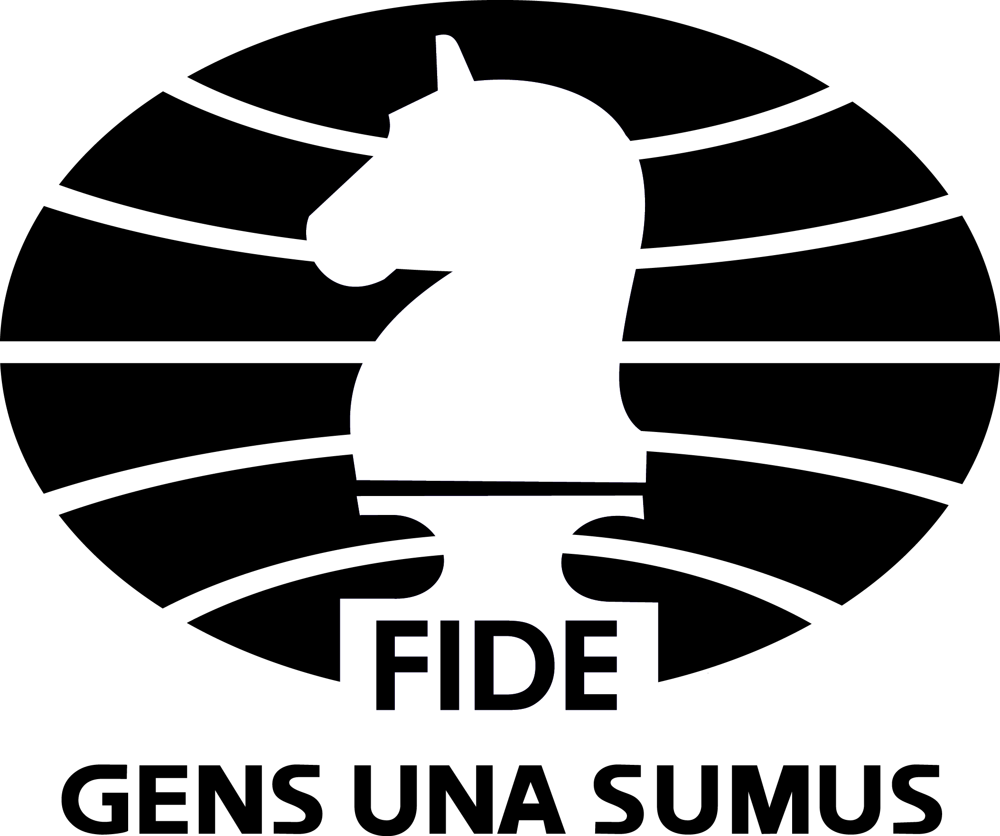

|

na tej stronie mozesz przeczytac najciekawsze informacje o mistrzach swiata w szachy |
definiowanie i ujednolicanie reguł gry w szachy oraz zasad rozgrywania międzynarodowych zawodów szachowych, obliczanie rankingu szachistów, przyznawanie tytułów (zobacz arcymistrz) szachistom oraz sędziom szachowym. Federacja organizuje najważniejsze zawody szachowe o zasięgu światowym, w tym indywidualne mistrzostwa świata oraz olimpiady szachowe, patronuje lub nadzoruje rozgrywanie niektórych turniejów międzynarodowych z udziałem najsilniejszych szachistów świata. Ogromna większość międzynarodowych zawodów szachowych odbywa się na zasadach określonych przez FIDE. Rozgrywki o zasięgu krajowym są organizowane w oparciu o przepisy narodowych związków szachowych, które z założenia nie mogą być sprzeczne z przepisami FIDE.
w zakresie organizacji meczów o tytuł mistrza świata wywoływała wiele kontrowersji. W 1975 Bobby Fischer nie przystąpił do meczu z pretendentem, skutkiem czego Anatolij Karpow został uznany za jego następcę. W 1984 roku prezydent Florencio Campomanes przerwał mecz pomiędzy Karpowem i Garrim Kasparowem bez wyłonienia zwycięzcy. Kontrowersje wzbudzała również działalność następcy Campomanesa, Ilumżynowa, oskarżanego m.in. o niedotrzymywanie obietnic finansowych.
Zawierają one charakterystyczne cechy kulturowe danego regionu.